06/11/2026 — Bệnh nhân 30 mấy tuổi đau ngực, hết đau sau “hỗn hợp thuốc tiêu hóa” (GI cocktail)
Bản dịch tiếng Việt của bài "A 30-something patient with chest pain, resolved after a “GI cocktail”" – Dr. Smith’s ECG Blog. Giữ nguyên toàn bộ 13 hình ảnh và 3 video của bản gốc.

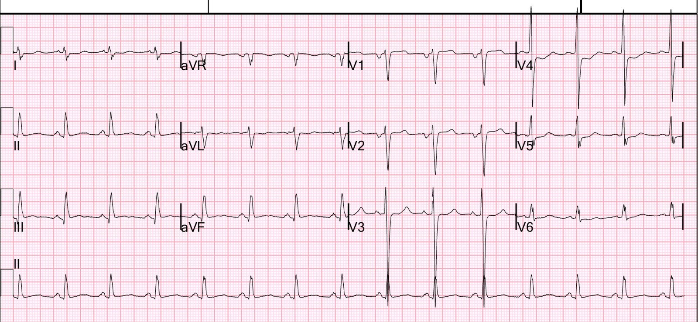
Ca này do một bác sĩ nội khoa gửi cho tôi; ông đang xem lại hồ sơ của một bệnh nhân mà ông khám tại phòng khám của mình.
Người phụ nữ trẻ 30 mấy tuổi này có tiền sử tăng huyết áp và béo phì đã khỏi (giảm cân thích hợp), kể rằng bị đau cánh tay phải và đau ngực phía trên kiểu “nóng rát”, lúc có lúc không, trong 10 ngày qua.
Trước đây chị đã từng có các triệu chứng tương tự, được cho dùng omeprazole và được dặn đi nội soi. Bệnh nhân trước đó đang dùng omeprazole nhưng đã ngưng từ vài tuần trước theo lời khuyên của bác sĩ để làm xét nghiệm H. pylori; chị cho biết cơn đau đã có ngay cả trước khi ngưng thuốc. Chị cũng kể có sưng chân trái mới xuất hiện và bị khó thở trong những cơn đau kèm nôn.
Một tháng trước, chị đến phòng khám vì đau thượng vị, nhưng lúc đó cũng than đau ngực.
Đây là ghi chép bệnh án:
Đau ngực và các triệu chứng kèm theo
– Có một cơn đau ngực nóng rát dữ dội cách đây hai đêm, bắt đầu lúc 9:00 tối và kéo dài đến 4:00 sáng.
– Cơn đau kèm nôn, mất nước và mệt mỏi.
– Không giữ được dịch uống vào trong cơn.
– Mô tả cơn đau là “đau khủng khiếp” và khác với các cơn trước.
– Các cơn tương tự tái diễn, đôi khi kèm huyết áp tăng, nhất là vào ban đêm lúc thư giãn.
Đây là điện tâm đồ ghi lúc đó, hơn một ngày sau khi triệu chứng đã hết:

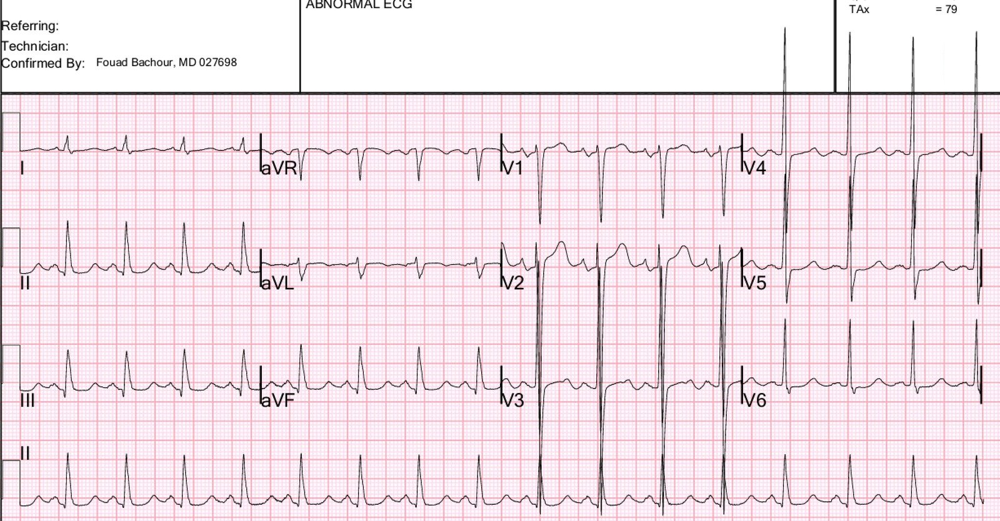
Điện tâm đồ này cho thấy LVH nhưng không có dấu hiệu nào của thiếu máu cục bộ, và không có ST chênh xuống đáng kể. Chẩn đoán của PMCardio Queen of Hearts là “No OMI” (không có OMI) và “Left Ventricular Hypertrophy” (phì đại thất trái)
Không đo troponin và bệnh nhân được cho về nhà.
Ca bệnh tại khoa cấp cứu (ED) tiếp diễn:
Bệnh nhân tăng huyết áp với huyết áp 174/118. Đây là điện tâm đồ tại khoa cấp cứu lúc đang đau ngực:

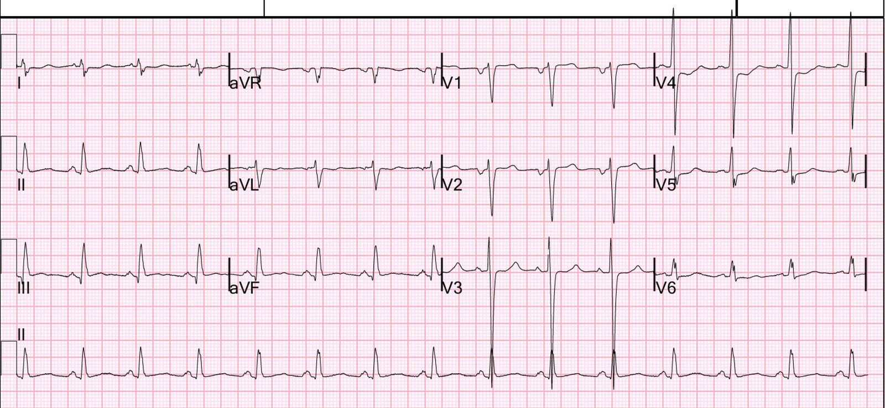
Bạn nghĩ sao?
Đây là so sánh với điện tâm đồ trước đó một tháng:
Hình này so sánh chuyển đạo III và aVL giữa 2 điện tâm đồ. Tôi hy vọng bạn thấy được sự khác biệt mang tính chẩn đoán rất rõ:

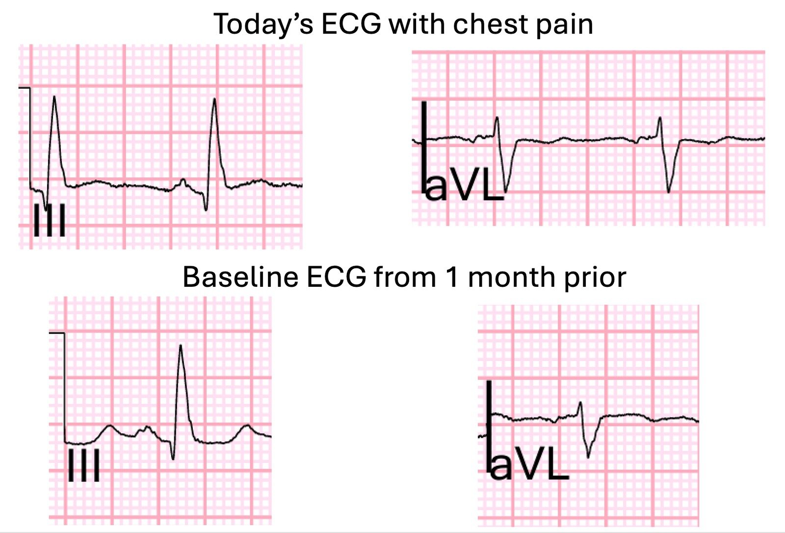
Điện tâm đồ này chẩn đoán OMI thành dưới-sau. Có ST chênh lên (STE) kín đáo với đoạn ST thẳng ở chuyển đạo III, kèm ST chênh xuống soi gương và sóng T dạng xuống-lên (down-up) ở aVL. Có ST chênh xuống tối đa ở chuyển đạo V4.
Đây là kết quả đọc của mô hình AI PMCardio Queen of Hearts:

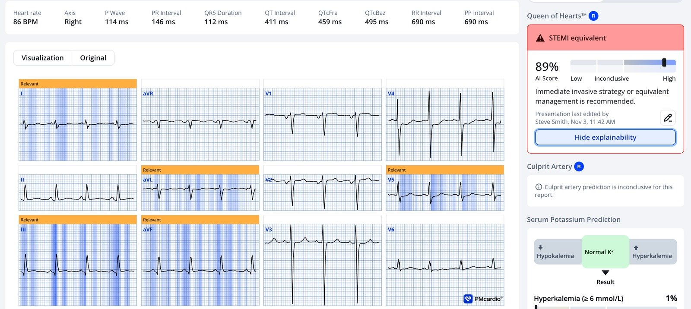
Không ai nhận ra rằng có bất kỳ bằng chứng nào của tắc mạch. “ST chênh xuống” có được ghi trong hồ sơ, nhưng đi kèm với “không có dấu hiệu cấp tính” (!!!!).
Hồ sơ ghi “Không đủ tiêu chuẩn STEMI”.
Một bác sĩ cấp cứu đã được đào tạo chuyên sâu (fellowship) về siêu âm đã làm siêu âm tại giường và không phát hiện rối loạn vận động thành. Có ghi nhận phì đại thất trái đồng tâm.
Đây là các video siêu âm:
Tôi không phải chuyên gia siêu âm, nhưng tôi có thể thấy siêu âm này cho thấy chức năng thất trái kém VÀ ít nhất có rối loạn vận động thành vùng mỏm.
Bệnh nhân cho biết cơn đau ngực đã đỡ nhiều, nhưng vẫn còn, sau khi được dùng hỗn hợp thuốc tiêu hóa (GI cocktail) (Maalox và Lidocaine) tại khoa cấp cứu.
Kết quả troponin lần đầu là 4406 ng/L.
Giờ thì không thể còn nghi ngờ gì về chẩn đoán nữa.
Bệnh nhân được dùng aspirin và được hội chẩn tim mạch; bác sĩ tim mạch đưa ra các khuyến nghị sau:
- Điều trị như NSTEMI cho đến khi chứng minh được điều ngược lại.
- Bắt đầu truyền nitroglycerin.
- Bắt đầu truyền heparin.
- Bắt đầu carvedilol 6.25 mg hai lần mỗi ngày.
- Tiếp tục aspirin 81 mg mỗi ngày.
- Bắt đầu atorvastatin 40 mg mỗi ngày.
- Nhịn ăn uống (NPO) sau nửa đêm.
- Duy trì huyết áp với mục tiêu tâm thu <140 mmHg và tâm trương <100 mmHg.
- Liên hệ lại với khoa Tim mạch nếu đau ngực tái phát hoặc có thay đổi điện tâm đồ đáng kể.
- Nhập đơn vị chăm sóc trung gian (step-down) để xử trí tiếp.
Sau khi kết quả D-dimer là 770 mg/L, bệnh nhân được chỉ định chụp CT mạch phổi (CTPA) và kết quả âm tính với mọi bất thường tim phổi cấp tính. Việc này rõ ràng là không cần thiết.
Điện tâm đồ ghi lại 4 giờ sau điện tâm đồ đầu tiên:

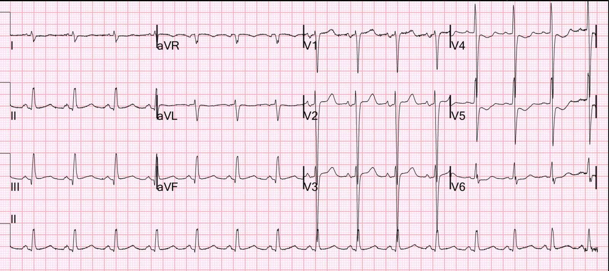
Điện tâm đồ vẫn còn thiếu máu cục bộ mặc dù hồ sơ ghi rằng cơn đau đã đỡ.

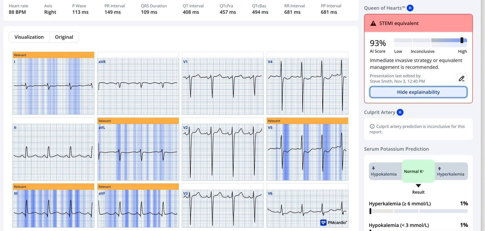
Troponin lần sau thấp hơn một chút, ở mức 3177 ng/L. Điều này phần nào làm yên tâm, nhưng troponin chỉ cho bạn biết điều đã diễn ra nhiều giờ trước đó, KHÔNG cho biết điều đang diễn ra vào lúc này.
Đến 8 giờ sau khi nhập viện, cơn đau đã hết và một điện tâm đồ khác được ghi lại:

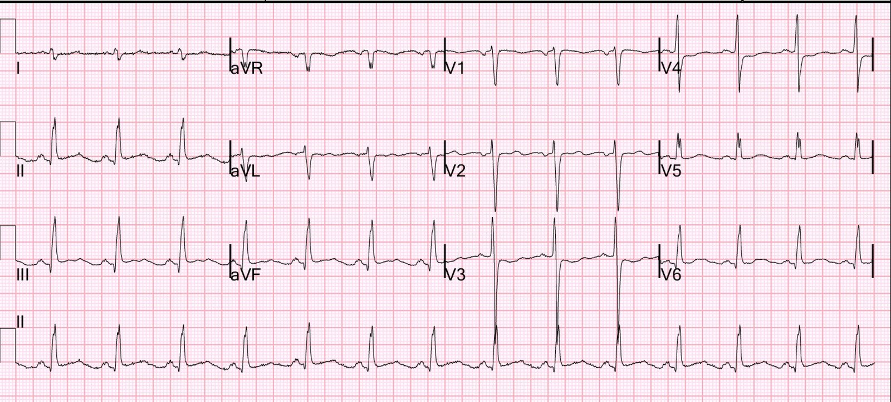
Điện tâm đồ này tốt hơn nhiều, nhưng vẫn cho thấy bằng chứng của OMI:

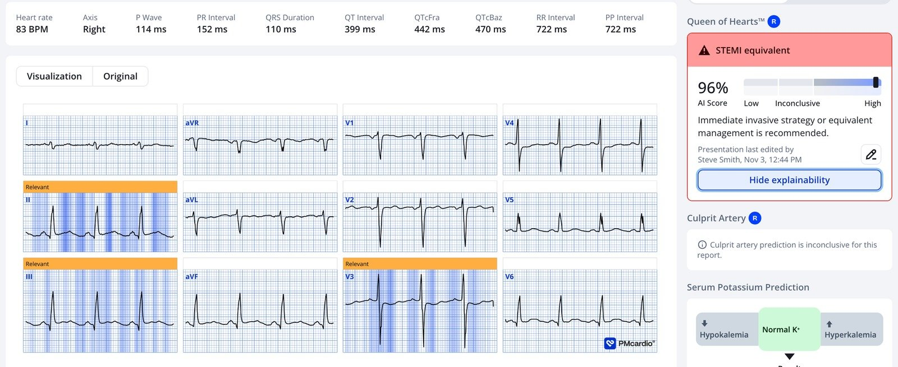
Không rõ bệnh nhân còn đau hay không. Không ghi thêm điện tâm đồ nào trước khi chụp mạch vành vào ngày hôm sau.
Đây là siêu âm tim chính thức có cản âm vi bọt (bubble contrast):
Phân suất tống máu thất trái ước tính là 40%. Thất trái giãn nặng theo các số đo thể tích, kèm tăng nhẹ bề dày thành thất trái. Rối loạn vận động thành khu trú - giảm động vùng mỏm-bên, vô động vùng mỏm-trước, giảm động vùng đáy dưới-vách.
Vậy đây là một tâm thất bị suy giảm đáng kể. Bao nhiêu phần là do nhồi máu một tháng trước, và bao nhiêu phần là do nhồi máu hôm nay, thì chưa chắc chắn.
Chụp mạch vành
Thủ phạm gây nhồi máu cơ tim không ST chênh lên của bệnh nhân là tắc gần hoàn toàn đoạn xa của một nhánh bờ tù thứ nhất (OM1) lớn. Nghi tắc hoàn toàn mạn tính (CTO) một RCA có khẩu kính nhỏ đến trung bình.
Xơ vữa động mạch nặng, sớm. Thủ phạm gây nhồi máu cơ tim không ST chênh lên của bệnh nhân là tắc gần hoàn toàn đoạn xa của một OM1 lớn. Nghi tắc hoàn toàn mạn tính một RCA có khẩu kính nhỏ đến trung bình.
Diễn tiến troponin:

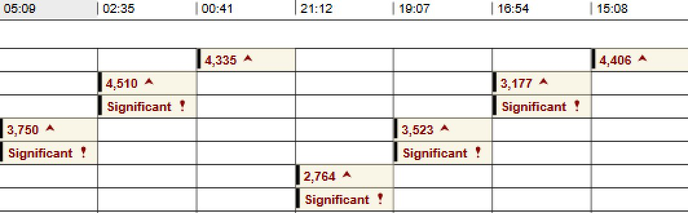
2 ngày sau

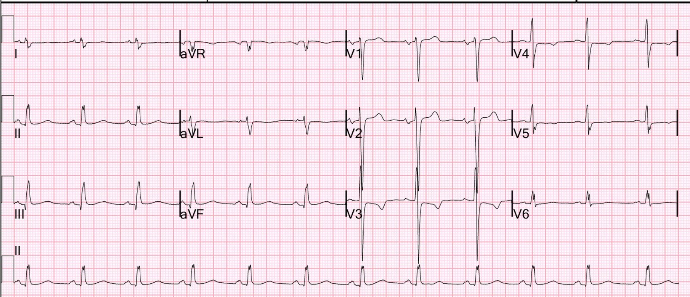

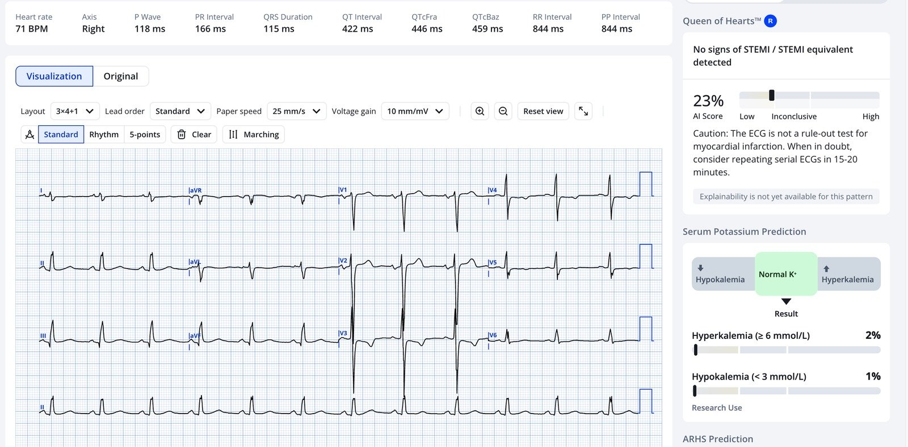
Bệnh nhân này không có theo dõi tim mạch về sau.
Những điểm cần học:
- Không thể phân biệt GERD (trào ngược dạ dày-thực quản) với thiếu máu cục bộ cơ tim nếu không có cả điện tâm đồ lẫn troponin. Cơn đau giống hệt nhau.
- Không thể loại trừ nhồi máu cơ tim cấp bằng một điện tâm đồ bình thường. Chỉ troponin mới làm được điều đó
- Tắc mạch cấp tính kéo dài được chẩn đoán tốt nhất bằng điện tâm đồ, và hiện đã biết Queen of Hearts có độ nhạy và độ đặc hiệu 92% đối với tắc mạch tại thời điểm ghi (trình bày tại TCT, San Diego, ngày 2 tháng Mười Một năm 2026)
- Ngay cả các phòng khám cũng nên có xét nghiệm troponin và sử dụng nó. Bệnh nhân này có lẽ đã bị nhồi máu cơ tim mà không được chẩn đoán ở lần khám tại phòng khám một tháng trước.
- Nếu bạn bị nhồi máu cơ tim, điều tồi tệ nhất là bạn lại là một phụ nữ trẻ. Sẽ không ai tin vào điện tâm đồ, vào troponin, hay thậm chí tin rằng bạn cần được chỉ định những xét nghiệm đó!
- Siêu âm tim tại giường có thể rất hữu ích, nhưng ở ca này đã bị bỏ sót. Tôi không biết vì sao. Có lẽ vì bệnh nhân là một phụ nữ trẻ và người làm siêu âm chỉ làm cho có lệ.
- Các thử nghiệm điều trị như “GI Cocktail” (hỗn hợp thuốc tiêu hóa) HOÀN TOÀN KHÔNG ĐÁNG TIN CẬY khi dùng như một nghiệm pháp chẩn đoán. Cứ việc dùng chúng để làm giảm triệu chứng, nhưng ít nhất 25% các trường hợp khó chịu ngực do thiếu máu cục bộ sẽ hết sau GI Cocktail, vì đau do thiếu máu cục bộ lúc có lúc không!
Đây là một ca bệnh mang tính bài học về troponin mà chúng tôi đã công bố trên Clinical Chemistry 63:1 (2017). Rất tiếc, tôi không có điện tâm đồ và không nhớ nó cho thấy gì.

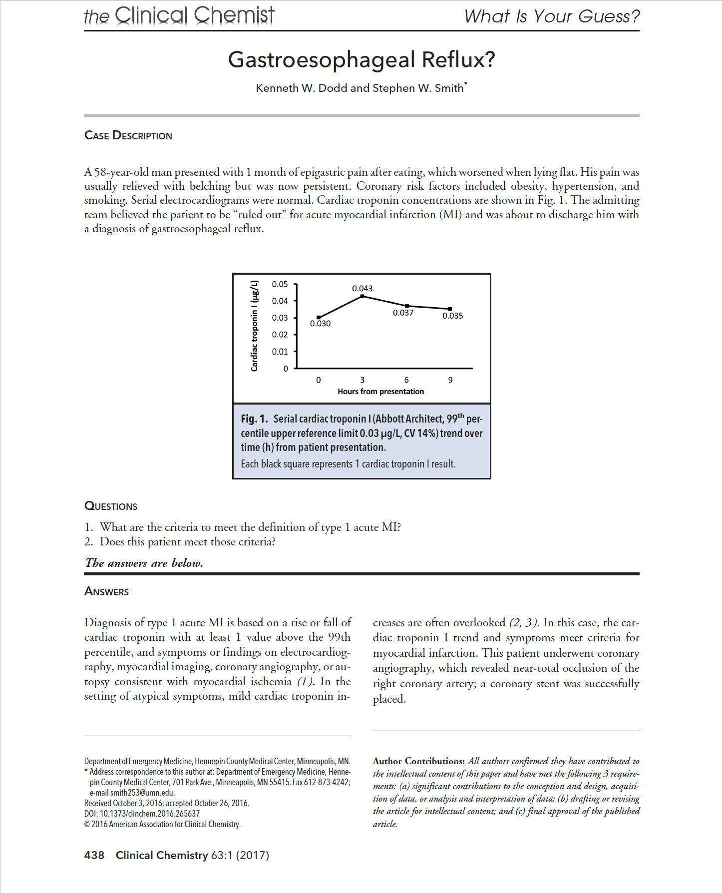
= = =
======================================
BÌNH LUẬN CỦA TÔI, bởi KEN GRAUER, MD (6/11/2026 ):
Tôi thấy ca hôm nay khó vì một số lý do. Bao gồm những lý do sau:
Lý do #1: Bệnh sử …
- Bệnh sử gây bối rối. Mặc dù bệnh nhân là một phụ nữ trẻ (30 mấy tuổi) mà người ta có thể cho là nguy cơ bệnh mạch vành cấp thấp hơn — chị có tăng huyết áp đã biết, và cân nặng từng dao động.
- Bệnh nhân có các triệu chứng chồng lấp — gồm đau ngực (CP) “nóng rát” xảy ra “lúc có lúc không” trong khoảng thời gian nghe như đã nhiều tuần, và đã được điều trị bằng Omeprazole vì nghĩ đến nguyên nhân tiêu hóa. Ngoài ra — chị còn kể có sưng chân kèm khó thở và những cơn nôn gây đau.
- Chị đã đến phòng khám vì các triệu chứng này một tháng trước khi đến khoa cấp cứu trong ca hôm nay. Lúc đó — chị mô tả một cơn đau ngực dữ dội “nóng rát” kéo dài nhiều giờ, nhưng đã hết hơn một ngày trước lần khám tại phòng khám (là lúc ghi điện tâm đồ #1 mà tôi đã đặt lại trong Hình 1 bên dưới).
- Có vẻ điện tâm đồ #1 không được cho là chỉ ra nguyên nhân do tim (Chúng tôi không được biết điện tâm đồ này được đọc ra sao — chỉ biết là không chỉ định Troponin và bệnh nhân được cho về nhà).
- Có vẻ như các triệu chứng từng lúc đau thượng vị (nghe như do tiêu hóa), cũng như đau ngực “nóng rát” vẫn tiếp diễn thêm một tháng nữa — cuối cùng dẫn đến lần đến khoa cấp cứu hôm nay. Bệnh nhân đang đau ngực vào lúc ghi điện tâm đồ tại khoa cấp cứu ( = điện tâm đồ #2).
Điều cốt lõi: Tôi thấy khó ghép nối bệnh sử trong ca hôm nay. Có vẻ như người điều trị đã bị đánh lạc hướng bởi thời gian kéo dài của một tập hợp triệu chứng từng lúc gợi ý GERD, nhưng cũng bao gồm cả đau ngực “nóng rát” tái phát.
- Như Dr. Smith đã nói — các triệu chứng của GERD không thể được phân biệt một cách đáng tin cậy với ACS (hội chứng vành cấp) chỉ dựa trên bệnh sử.
- Mặc dù các triệu chứng của bệnh nhân này xảy ra từng lúc — chúng đã kéo dài nhiều tuần (nếu không phải nhiều tháng) mà không đáp ứng với Omeprazole, và do đó không có chẩn đoán xác định. Khi có thành phần đau ngực tái phát — bài học rút ra là cần loại trừ bệnh mạch vành sớm hơn.
= = =
Lý do #2: Các điện tâm đồ không “bình thường” …
Tôi thấy 2 điện tâm đồ đầu tiên trong ca hôm nay rất giàu thông tin vì một số lý do kín đáo nhưng quan trọng. Để rõ ràng, trong Hình 1 — tôi đã đặt lại 2 bản ghi đầu tiên này.
- Điện tâm đồ #1 — là bản ghi một tháng trước lần đến khoa cấp cứu hôm nay. Bản ghi này đáng chú ý với nhịp nhanh xoang (tần số ~100/phút) và LVH rõ rệt. Tôi đã tô màu các phức bộ QRS ở các chuyển đạo giữa ngực để dễ đánh giá biên độ điện thế rất lớn vốn bị rối do các chuyển đạo chồng lên nhau (ĐỎ = sóng S >60 mm ở chuyển đạo V3; XANH LÁ = tổng sóng R+S >50 mm ở chuyển đạo V4). Mức độ tăng biên độ QRS như vậy cho chúng ta biết người trưởng thành còn khá trẻ có tăng huyết áp đã biết này đã biểu hiện bệnh cấu trúc đáng kể.
- Xin nhấn mạnh — LVH rõ rệt mà không có thay đổi ST-T cấp tính không phải là lý do để nhập viện cho bệnh nhân. Nhưng như Dr. Smith đã nói — một điện tâm đồ đơn lẻ, nhất là khi không có Troponin — là không đủ để loại trừ ACS ở lần khám tại phòng khám một tháng trước đó của bệnh nhân.
- Điểm MẤU CHỐT: Việc điện tâm đồ #1 biểu hiện cả nhịp nhanh xoang lẫn LVH rõ rệt như vậy khiến việc phát hiện các thay đổi cấp tính kín đáo càng khó hơn. Điều này càng đúng khi cơn đau ngực của bệnh nhân đã hết hơn một ngày trước khi điện tâm đồ #1 được ghi tại phòng khám (tức là, Một điện tâm đồ ghi hơn một ngày sau khi hết đau ngực thì càng ít khả năng vẫn còn cho thấy thay đổi cấp tính).
- Ví dụ — ST dạng vòm (coving) kín đáo kèm ST chênh lên nhẹ ở chuyển đạo aVL của điện tâm đồ #1 (mũi tên XANH DƯƠNG) không phải là đáp ứng ST-T mà tôi chờ đợi ở một chuyển đạo bên do LVH đơn thuần.
- Tương tự với tình trạng ST dẹt được đánh dấu bằng các mũi tên XANH DƯƠNG ở các chuyển đạo trước tim (kèm ST chênh xuống ở chuyển đạo V6).
- Xin nhấn mạnh: Điện tâm đồ #1 không có giá trị chẩn đoán. Nhưng tôi thấy đáng ngờ rằng có thể đã xảy ra một biến cố cấp tính vào thời điểm bệnh nhân bị cơn đau ngực dữ dội “nóng rát” kéo dài nhiều giờ, nhưng đã hết hơn một ngày trước khi điện tâm đồ #1 được ghi.
- Bài học cần rút ra: Bệnh nhân có tăng huyết áp đã biết này chắc chắn sẽ có các điện tâm đồ cũ trong hồ sơ. Trước khi cho bệnh nhân về nhà từ phòng khám mà không làm Troponin — điều tối thiểu lẽ ra phải làm là lấy một điện tâm đồ cũ ra so sánh, xem các thay đổi ST-T kín đáo nêu trên có phải là mới hay không.
= = =
Điện tâm đồ #2: Ghi trong lúc đau ngực …
Một số dấu hiệu quan trọng đã bị bỏ sót trên điện tâm đồ #2 — là bản ghi trong lúc đau ngực, vào thời điểm bệnh nhân đến khoa cấp cứu trong ca hôm nay.
- Như Dr. Smith đã nói — điện tâm đồ #2 chẩn đoán OMI dưới-sau cấp cho đến khi chứng minh được điều ngược lại. Mặc dù nếu xét riêng — mức ST chênh lên ở chuyển đạo III và mức ST chênh xuống đối hướng dạng hình soi gương ở chuyển đạo aVL là kín đáo — đây rõ ràng là một thay đổi mới so với hình dạng đoạn ST lõm (scooped) ở chuyển đạo III và hình dạng đoạn ST dạng vòm ở chuyển đạo aVL vốn có trên điện tâm đồ #1.
- Bài học cần rút ra: Chẳng phải dễ nhận ra sự khác biệt giữa các điện tâm đồ liên tiếp hơn rất nhiều khi bạn đánh giá hai bản ghi đặt cạnh nhau sao? (như trong Hình 1).
- Khi so sánh điện tâm đồ #1 với điện tâm đồ #2 cũng phải thấy rõ — rằng có nhiều ST chênh xuống ở các chuyển đạo trước tim hơn trên điện tâm đồ #2, đặc biệt rõ ở chuyển đạo V4 — và điều này gợi ý OMI thành sau mới xảy ra (mũi tên ĐỎ ở chuyển đạo V4).
- LƯU Ý: Các sóng P ở chuyển đạo V1 và V2 trên điện tâm đồ #2 đều âm. Đây cũng là một thay đổi mới so với điện tâm đồ #1 (Sóng P ở chuyển đạo V1,V2 trên điện tâm đồ #1 hai pha với thành phần âm nhỏ hơn). Dấu hiệu này gợi ý đặt điện cực V1,V2 quá cao trên điện tâm đồ #2 — đây là một dấu hiệu có ý nghĩa khi chúng ta đang rất nghi ngờ OMI thành sau cấp (Xem Phần bổ sung cho Bình luận của tôi trong bài đăng ngày 6 tháng Ba năm 2026 —để biết thêm về đặt sai vị trí điện cực V1,V2). Ghi lại điện tâm đồ #2 sau khi sửa lại vị trí điện cực bị đặt sai có lẽ đã cho thấy ST dẹt/chênh xuống ở chuyển đạo V1,V2, giúp củng cố thêm mối nghi ngờ mạnh mẽ của chúng ta về OMI thành sau.
Cuối cùng — Hãy lưu ý sự thay đổi rõ rệt về hình thái QRS giữa điện tâm đồ #1 và điện tâm đồ #2.
- Như đã nêu ở trên — Chúng ta đã biết là các điện cực V1,V2 bị đặt sai vị trí.
- Việc bệnh nhân là phụ nữ mà điện thế QRS ở các chuyển đạo trước tim trên điện tâm đồ #2 thấp hơn rõ rệt so với điện tâm đồ #1 — có lẽ là hậu quả của một khác biệt nữa trong cách đặt điện cực trước tim.
- Đặt sai vị trí điện cực chuyển đạo ngực là điều thường gặp trong thực hành chung (Rehman và Rehman — Cureus 12(7):e9040, 2020). Do các vấn đề khi đặt điện cực liên quan đến mô vú — việc đặt điện cực chuyển đạo ngực tối ưu là đặc biệt khó khăn ở phụ nữ — dẫn đến các biến thể không nhất quán, và rất thường xuyên phụ thuộc vào kỹ thuật viên (Kligfield và cs. — Tuyên bố khoa học AHA/ACC/HRS, 2007).
- Đặc biệt — sự sụt giảm đột ngột biên độ sóng R ở các chuyển đạo ngực bên trên điện tâm đồ #2 rất có thể liên quan đến việc các điện cực chuyển đạo ngực bên được đặt lên trên (chứ không phải bên dưới) mô vú.
- Hiện không có đồng thuận chung về việc nên đặt các điện cực chuyển đạo ngực V4,V5,V6 lên trên hay bên dưới mô vú (Rautaharju và cs. — J Electrocardiol 31(1):17-29, 1998). Điều quan trọng — là tính nhất quán, trong chừng mực có thể. Lý do là khi các kỹ thuật viên khác nhau dùng các mốc giải phẫu khác nhau và các kỹ thuật khác nhau khi ghi điện tâm đồ cho phụ nữ — có thể dẫn đến những khác biệt rõ rệt về cả hình thái QRS lẫn ST-T.
- Không chắc chắn khác biệt trong kỹ thuật ghi đã ảnh hưởng bao nhiêu đến hình dạng QRST khác nhau ở các chuyển đạo trước tim của 2 bản ghi trong Hình 1.
- Suy nghĩ của tôi: Tôi nghiêng về Cách tiếp cận Giải phẫu/Đặt Trên Vú — trong đó các điện cực chuyển đạo ngực được đặt lên trên mô vú, ngay trên các mốc khoang liên sườn giải phẫu thực sự. Lý do là dữ liệu cho thấy mô vú chỉ ảnh hưởng ở mức vừa phải đến biên độ QRS — trong khi đặt điện cực bên dưới mô vú có thể làm các chuyển đạo dịch xuống thấp đáng kể, dẫn đến biến dạng hình thái QRST (Derkenne và cs. — BMJ Case Rep, 2017 ).
- Các nguồn khác lại ủng hộ Cách tiếp cận Thực hành/Đặt Dưới Vú — trong đó các điện cực V4,V5,V6 được đặt ở nếp dưới vú (bên dưới vú). Cách này có thể hữu ích khi thể trạng gây khó khăn cho việc sờ chính xác khoang liên sườn thứ 4 và thứ 5 — vì đặt các chuyển đạo dưới nếp vú cho một bề mặt chắc, dễ xác định để đặt điện cực.
- Bài học cần rút ra: Cân nhắc đặc điểm giải phẫu ở nữ giới có thể quan trọng khi so sánh các bản ghi liên tiếp, nhất là khi nhận thấy khác biệt đáng kể về hình thái QRST giữa 2 bản ghi đang so sánh (như phải thấy rõ trong Hình 1).
= = =
Hình 2: Tôi đã đặt lại và ghi chú 2 điện tâm đồ đầu tiên trong ca hôm nay.

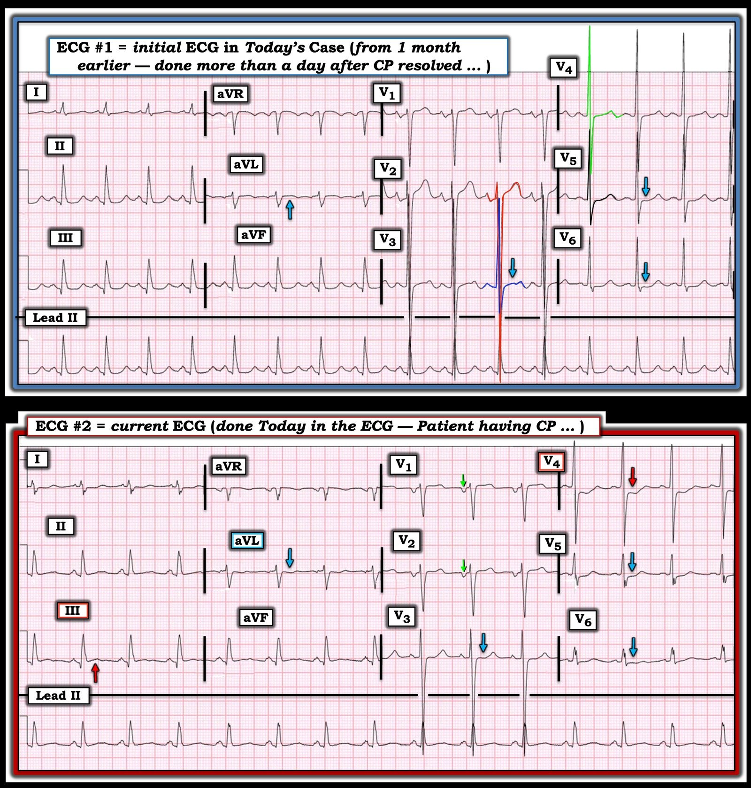
= = =
= = =